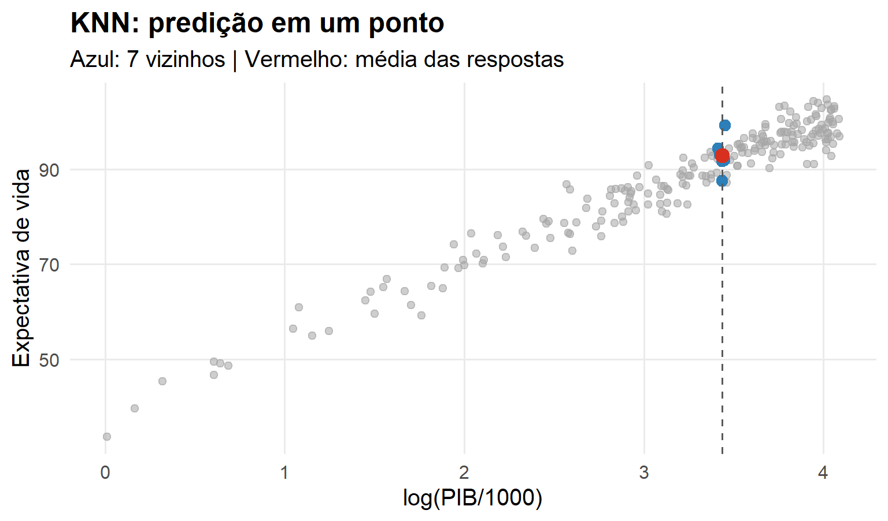
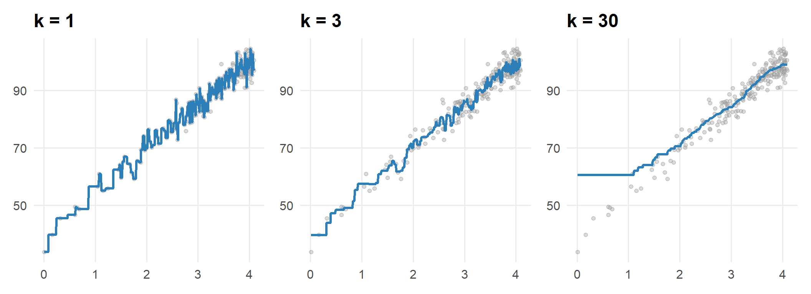
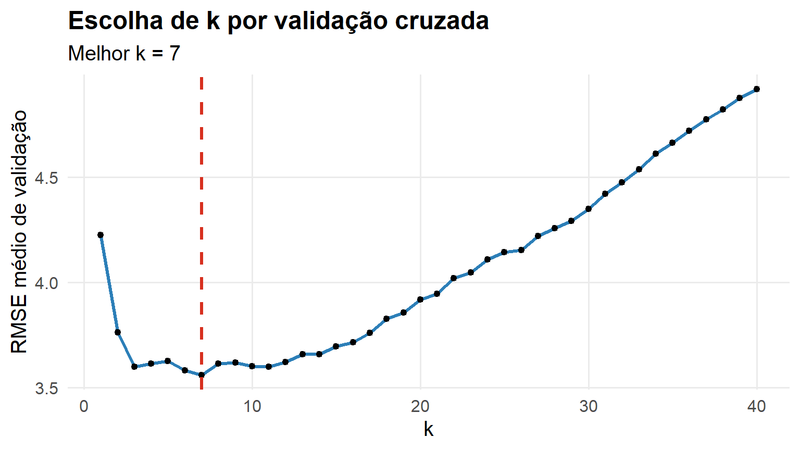
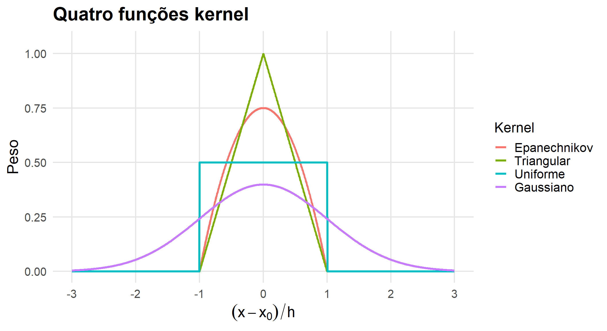
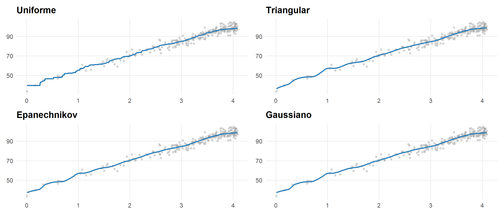
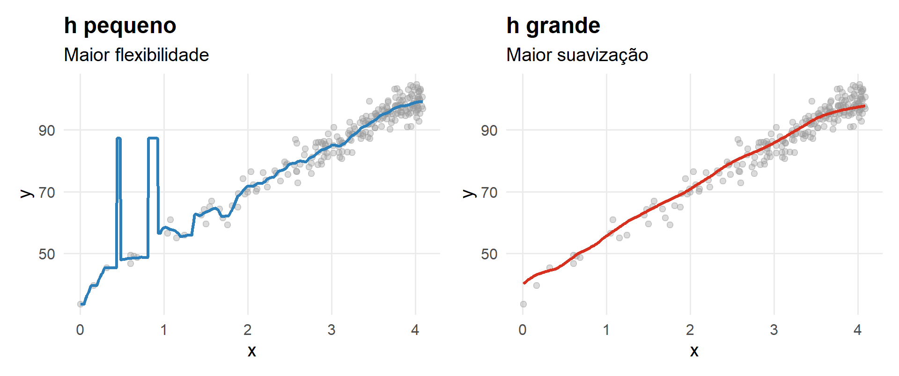
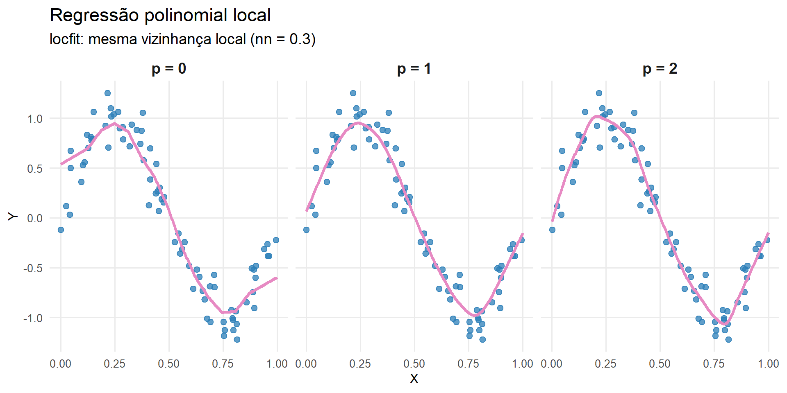

Métodos Locais: KNN, Kernel e Regressão Local
Até agora especificamos uma forma para \(g(x)\): reta, polinômio ou spline.
Agora perguntaremos:
\[ \boxed{\text{É possível aprender }r(x)\text{ diretamente da vizinhança dos dados?}} \]
Queremos estimar
\[ r(x)=E(Y\mid X=x) \]
sem impor uma forma global rígida.
\[ \boxed{\text{Observações próximas em }X\text{ devem influenciar mais a predição}} \]
Para prever \(Y\) em \(x\):
Quais observações de treinamento são mais parecidas com \(x\)?
Usamos então as respostas dessas observações para construir a predição.
Se \(\mathcal{N}_k(x)\) são os \(k\) vizinhos mais próximos de \(x\), a estimativa de \(r(x)\) é dada por:
\[ \boxed{ g(x)= \frac1k\sum_{i\in \mathcal{N}_k(x)}Y_i } \]
\[ \text{localizar}\rightarrow\text{selecionar vizinhos}\rightarrow\text{calcular a média} \]
O estimador é:

Repetimos o procedimento para muitos \(x\):

\[ k\downarrow\Rightarrow\text{vizinhança pequena}\Rightarrow\text{maior flexibilidade} \]
\[ k\uparrow\Rightarrow\text{vizinhança grande}\Rightarrow\text{maior suavização} \]
\[ \boxed{k=\text{hiperparâmetro de complexidade}} \]
O parâmetro \(k\) controla o grau de suavização do estimador. Define o equilíbrio viés e variância
Ao contrário de um modelo paramétrico, o KNN precisa consultar os dados de treinamento para realizar novas predições.
\[ \boxed{\text{KNN é um método local, baseado em instâncias}} \]
Em uma dimensão:
\[ d(x_i,x_k)=|x_i-x_k| \]
Em \(p\) dimensões:
\[ d(\mathbf x_i,\mathbf x_k)= \sqrt{\sum_{j=1}^p(x_{ij}-x_{kj})^2} \]
Se uma variável varia entre 0 e 1 e outra entre 0 e 100.000, a segunda pode dominar a distância.
\[ X_j^*=\frac{X_j-\bar X_j}{s_j} \]
Métodos baseados em distância são particularmente sensíveis à escala

\[ \widehat k=\arg\min_k\widehat R_{CV}(k) \]
\[ g(\mathbf x) = \frac1k \sum_{i\in \mathcal N_k(\mathbf x)}Y_i \]
Como \(Y_i\in\{0,1\}\),
\[ \boxed{ g_k(\mathbf x) = \frac1k \sum_{i\in \mathcal N_k(\mathbf x)}I(Y_i=1) } \]
Se entre os \(k=5\) vizinhos temos
\[ (1,1,0,1,0) \]
então
\[ g_5(\mathbf x) = \frac35 = 0.6 \]
Com cutoff \(0.5\),
\[ \widehat g_5(\mathbf x)=1 \]
Para \(Y\in\{1,\ldots,G\}\), estimamos
\[ \boxed{ \widehat P(Y=j\mid\mathbf X=\mathbf x) = \frac1k \sum_{i\in \mathcal N_k(\mathbf x)} I(Y_i=j) } \]
e classificamos por
\[ \boxed{ \widehat g_k(\mathbf x) = \arg\max_j \widehat P(Y=j\mid\mathbf X=\mathbf x) } \]
\[ k \downarrow \quad\Longrightarrow\quad \text{fronteira mais flexível} \]
\[ k \uparrow \quad\Longrightarrow\quad \text{fronteira mais suave} \]
Portanto, o mesmo balanço viés–variância estudado em regressão reaparece na classificação
A principal mudança é a quantidade estimada: uma média de respostas binárias pode ser interpretada como uma probabilidade de classe
No KNN, todos os vizinhos selecionados recebem o mesmo peso.
Uma observação quase coincidente com \(x\) pode receber o mesmo peso que o \(k\)-ésimo vizinho.
E se fizermos o peso diminuir com a distância?
No KNN, estimamos a função de regressão por:
\[ g(\mathbf{x}) = \frac{1}{k} \sum_{i \in \mathcal{N}_k(\mathbf{x})} Y_i \]
No método de Nadaraya–Watson, o estimador de regressão é dado por:
\[ g(\mathbf{x}) = \sum_{i=1}^{n} w_i(\mathbf{x})\,Y_i \]
onde \(w_i(\mathbf{x})\) representa o peso atribuído à observação \(i\).
\[ \sum_{i=1}^{n} w_i(\mathbf{x}) = 1 \]
Os pesos são definidos por:
\[ w_i(\mathbf{x}) = \frac{K(\mathbf{x}, \mathbf{x}_i)}{\sum_{j=1}^{n} K(\mathbf{x}, \mathbf{x}_j)} \]
Em que,
Ele controla:
Observações próximas recebem maior influência na estimativa de \(g(x)\).
Uniforme: todos os pontos dentro de \(h\) têm o mesmo peso
\[ K(\mathbf{x}, \mathbf{x}_i) = \mathbf{I}\{d(\mathbf{x}, \mathbf{x}_i) \le h\} \]
Triangular: peso decresce com a distância
\[ K(\mathbf{x}, \mathbf{x}_i) = \left(1 - \frac{d(\mathbf{x}, \mathbf{x}_i)}{h}\right)\mathbf{I}\{d(\mathbf{x}, \mathbf{x}_i) \le h\} \]
Epanechnikov: peso decresce com a distância
\[ K(\mathbf{x}, \mathbf{x}_i) = \left(1 - \frac{d(\mathbf{x}, \mathbf{x}_i)^2}{h^2}\right)\mathbf{I}\{d(\mathbf{x}, \mathbf{x}_i) \le h\} \]
Gaussiano: todos os pontos recebem peso. Pontos mais próximos têm maior influência
\[ K(\mathbf{x}, \mathbf{x}_i) = \frac{1}{\sqrt{2\pi}h} \exp\left(-\frac{d(\mathbf{x}, \mathbf{x}_i)^2}{2h^2}\right) \]
Nota
O parâmetro \(h\) controla a largura da vizinhança


A escolha de \(h\) costuma ser mais importante que a forma exata do kernel.
\[ h\downarrow\Rightarrow\text{mais local}\Rightarrow\text{mais flexível} \]
\[ h\uparrow\Rightarrow\text{mais observações relevantes}\Rightarrow\text{mais suave} \]
\[ \boxed{h=\text{hiperparâmetro de suavização}} \]

Na prática, observa-se que:
O comportamento do estimador é controlado principalmente por: \(h\) (largura da vizinhança)
| Aspecto | KNN | Kernel |
|---|---|---|
| Vizinhança | \(k\) observações | controlada por \(h\) |
| Pesos | iguais | dependem da distância |
| Hiperparâmetro | \(k\) | \(h\) |
| Predição | média local | média local ponderada |
\[ \boxed{\text{mesma filosofia: aprender localmente}} \]
Tratamos diferentes valores de \(h\) como candidatos:
\[ h_1,\ldots,h_M \]
Selecionamos por validação:
\[ \boxed{\widehat h=\arg\min_h\widehat R_{CV}(h)} \]
A regressão de Nadaraya–Watson estima \(g(x)\) como uma média ponderada local, ou seja, resolve
\[ \hat{g}(\mathbf{x}) = \arg\min_{\beta_0} \sum_{i=1}^n w_i(\mathbf{x})\,(Y_i - \beta_0)^2 \]
Isso equivale a ajustar localmente uma constante (polinômio de grau 0).
A regressão polinomial local generaliza essa ideia, permitindo que o ajuste local seja mais flexível.
Em vez de ajustar apenas um intercepto, consideramos um polinômio de grau \(p\):
\[ g(\mathbf{x}) \approx \beta_0 + \beta_1 x + \beta_2 x^2 + \cdots + \beta_p x^p \]
Para cada ponto \(\mathbf{x}\), estimamos os coeficientes resolvendo:
\[ (\hat{\beta}_0, \ldots, \hat{\beta}_p) = \arg\min_{\beta_0,\ldots,\beta_p} \sum_{i=1}^n w_i(\mathbf{x})\left(Y_i - \beta_0 - \sum_{j=1}^p \beta_j x_i^j \right)^2 \]
Ou seja, realizamos um ajuste de mínimos quadrados ponderados localmente.
A solução matricial é dada por:
\[ \hat{\boldsymbol{\beta}} = (B^t D B)^{-1} B^t D \boldsymbol{y} \]
onde:

Note que:
nn é a fração de observações utilizada para definir adaptativamente a vizinhança em torno de cada ponto onde a regressão local é ajustada.
\[nn\downarrow\Rightarrow\text{vizinhança menor}\Rightarrow\text{maior flexibilidade}\]
\[nn\uparrow\Rightarrow\text{vizinhança maior}\Rightarrow\text{maior suavização}\]
A figura compara estimadores obtidos com o mesmo kernel e a mesma fração de observações nn, variando apenas o grau \(p\) do polinômio ajustado localmente.
Quando \(p=0\), obtemos o estimador de Nadaraya-Watson. À medida que o grau aumenta, o modelo local torna-se mais flexível, podendo capturar melhor a curvatura da função de regressão.
EST335 — Semana 5